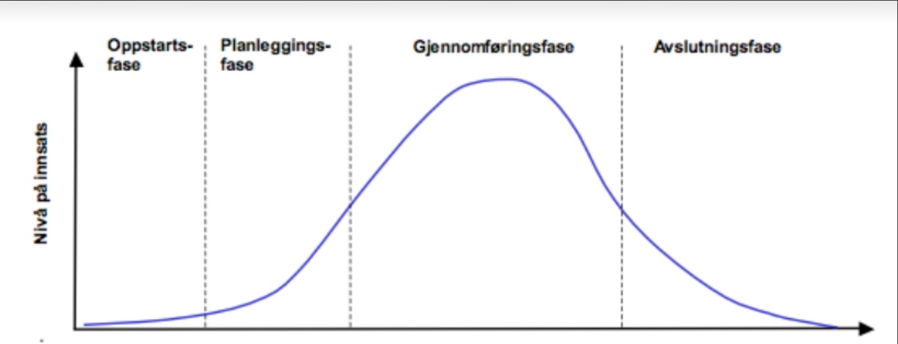

Et prosjekt er målrettet innsats, på veien mot et ønsket resultat, og deles typisk inn i planleggingsfasen, gjennomføringsfasen og evalueringsfasen (Aakre & Scharning, 2016). Prosjekter varierer i størrelse og lengde, derfor har prosjekter vanligvis en planlagt tid- og ressursramme. Ettersom prosjekter varierer i størrelse, kompleksitet og fagområde, vil sammensetningen av team og fremgangsmåte være svært varierende. IT-prosjekter varierer også veldig i kompleksitet. Det kan være snakk om å utvikle enkle nettsider, til å utvikle store nasjonale IT-løsninger, med millioner av brukere.
Planleggingsfasen innebærer å identifisere et problem som skal løses eller et behov som skal dekkes (Aakre & Scharning, 2016). Her er det viktig at de involverte i prosjektet får god forståelse for oppgaven, selskapet og bransjen de jobber i. Videre bør problemet, ønsket resultat og rammer defineres. Med rammer menes eksempelvis hva som skal prioriteres, hva som mulig, hva som ikke er mulig, hvor mye tid som kan brukes på prosjektet og hva budsjettet er. En av de grunnleggende prinsippene for prosjektledelse er etableringen av tydelige prosjektmål og -målsetninger (Aakre & Scharning, 2016). Målsettingen med et IT-prosjekt kan variere fra utvikling av ny programvare til implementering av en kompleks nettverksinfrastruktur. Prosjektlederen og andre nøkkelpersoner må arbeide tett med interessenter for å identifisere og forstå deres krav og forventninger, slik at løsningen lever opp til interessentenes behov og budsjetter.
For å planlegge prosjektet godt, bør det utvikles en omfattende prosjektplan som inkluderer tidsplaner, ressursallokering, kostnadsestimater og risikohåndtering (Aakre & Scharning, 2016). Prosjektrisikostyring er også vesentlig i IT-prosjektledelse. IT-prosjekter involverer alltid en viss grad av usikkerhet, og prosjektlederen må kunne identifisere, vurdere og håndtere risiko. Dette kan inkludere teknologisk usikkerhet, endringer i krav, eller leveranseproblemer. Prosedyrer for risikohåndtering bør integreres i prosjektplanen (Aakre & Scharning, 2016). En detaljert plan vil derfor hjelper med å håndtere kompleksiteten i IT-prosjekter. Prosjektlederen må også vurdere bruk av agile metoder, som Scrum eller Kanban, som gir fleksibilitet og tilpasningsevne i prosjektgjennomføringen.
Gjennomføringsfasen går ut på å gjøre arbeidet som er avtalt, i henhold til tidsplanen ved å gjøre nye vurderinger, eventuelle reguleringer, og oppdage risiko underveis i arbeidet (Aakre & Scharning, 2016). Denne fasen innebærer også dokumentasjon av hva som er gjort slik at andre kan eksempelvis lett kan ta over arbeidet senere i prosjektet, eller at det kan brukes i andre prosjekter ved en senere anledning. Effektiv kommunikasjon utgjør avgjørende rolle i gjennomføringsfasen, for å sikre at teammedlemmer, interessenter og andre involverte forstår prosjektmålene og prosjektstatusen. Dette krever regelmessige møter, rapportering og etablering av en klar kommunikasjonsstruktur. Prosjektet avsluttes ved overlevering av produktet, og ferdigstilling av kontraktuelle forpliktelser.
Evalueringsfasen går ut på å se tilbake og identifisere suksessfaktorer i prosjektet, og rose teamet for et vel gjennomført prosjekt (Aakre & Scharning, 2016). Her blir det viktig å undersøke håndfaste gevinster som for eksempel hvor mange flere kunder som er generert i etterkant av prosjektleveransen, og hvor mye mindre tid som brukes på manuelle prosesser. Videre bør de ikke-håndfaste gevinstene også undersøkes. De kan eksempelvis være omdømme eller tilfredshet blant interessenter. Prosjektlederen må kunne motivere, veilede og rose teammedlemmene. Derfor er det viktig for teamet å gå gjennom hva de sitter igjen med av verdi etter et ferdigstilt prosjekt.